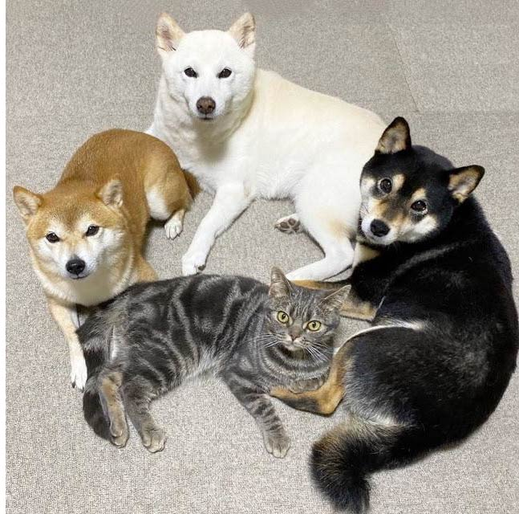

柴犬とは
体高より体長がやや長く、小さな立ち耳、短毛でダブルコート。巻尾は左巻きや右巻き、さし尾など形態が異なる。毛色は赤、白、黒の三色がある。
特徴
柴犬は愛玩犬ではなく、優秀な猟犬として長く存在してきた犬です。自立心が強く、家族に対してもベタベタ甘えてくることはなく、クールに接します。しかし、服従心や忠実さはあり、保守的で防衛心が強いので、テリトリーをむやみに犯す他人や他犬には厳しい態度を示します。でも、性格は犬によりますね。

体高より体長がやや長く、小さな立ち耳、短毛でダブルコート。巻尾は左巻きや右巻き、さし尾など形態が異なる。毛色は赤、白、黒の三色がある。
柴犬は愛玩犬ではなく、優秀な猟犬として長く存在してきた犬です。自立心が強く、家族に対してもベタベタ甘えてくることはなく、クールに接します。しかし、服従心や忠実さはあり、保守的で防衛心が強いので、テリトリーをむやみに犯す他人や他犬には厳しい態度を示します。でも、性格は犬によりますね。